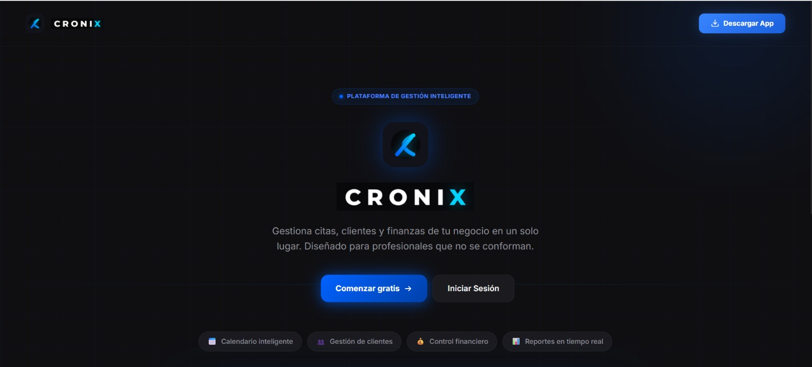
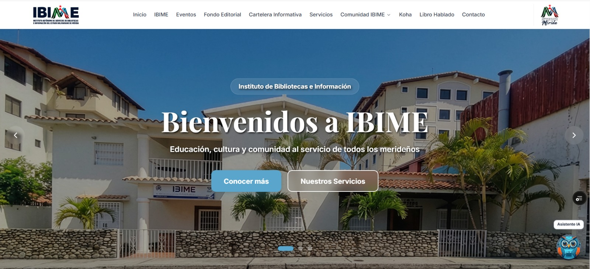

Hi, I'm Luis Romero
Backend Developer & AI Engineer with 3 years shipping AI products to production — and keeping them running there. I build backend at Complexity (Texas, US) and founded Cronix, a 24/7 multi-tenant SaaS managing 250+ real appointments autonomously. My work isn't plugging in an LLM: it's designing the controls that stop it from inventing data, and measuring its reliability instead of assuming it.
About Me
Who I am
A bit of background and the technologies I work with
I'm a Backend Developer & AI Engineer based in Mérida, Venezuela. I started as a self-taught developer on freeCodeCamp and official docs, then deepened my skills at the Academlo Full-Stack Bootcamp — where I discovered a strong focus on backend architecture.
Today I build backend at Complexity, a software company in Texas, where I audited the product's backend, had my remediation plan approved and am running it end to end — while defining how the team ships: spec-driven development with traceability from ticket to PR.
Alongside that I build and operate AI systems with real users every day. I founded Cronix, a multi-tenant SaaS that autonomously manages appointments over WhatsApp and voice with a custom orchestration engine — no framework, fully from scratch — plus a workshop assistant on Python and LangGraph and an industrial assistant grounded in real service history.
I care deeply about reliability: anti-hallucination layers, deterministic architectures, end-to-end observability, and comprehensive test suites are part of everything I ship.
When the project requires it, I build the frontend too — Next.js 15, React 19, PWA with offline support. Full-stack when needed, backend-first always.
Experience
Where I've worked
- Backend for a mobile application: versioned REST API with OpenAPI, real-time over WebSockets, background job queues and full-text search, on a modular monolith of 26 domain modules (NestJS, PostgreSQL/TypeORM, Redis, Elasticsearch).
- Joined the team after passing their technical challenge — a search and discovery engine for a real product problem, delivered deployed, documented with OpenAPI and security-scanned in CI.
- Audited the backend, presented my findings to the team and had my remediation plan approved; I'm running it end to end. Exposure risks first: stripped sensitive data out of responses and logs, moved hardcoded credentials into configuration validated at startup, closed off the docs in production, and repaired seven test suites that no longer compiled.
- Defined how the team works: spec-driven development with traceability from ticket to PR, branch and commit conventions, a PR template with a review budget that counts hand-written and generated code separately, and a CI workflow that enforces branch policy and independent review — a plan broken into ~150 scoped changes.
- Built the AI assistant a public library network uses to answer citizens' queries, inside the platform that replaced their legacy system. The institution adopted it as its official platform and, on the back of that delivery, appointed me Software Development Lead (May – Jul 2026).
- Stopped the assistant from making up answers by keeping the model out of the decision flow: a rule-based intent classifier (no LLM) routes the conversation, and when the citizen's email is already known the answer comes straight from the database — less cost, less latency, and no opportunity to hallucinate.
- Implemented RAG and semantic search over the institution's documents: PostgreSQL + pgvector with 768-dim Gemini embeddings, inference on Groq configurable per environment, Redis embedding cache, and a match threshold that prefers not answering over answering badly.
- Built a stateful LangGraph agent (extractor, validator, corrector with bounded retries) that turns catalog PDFs into structured, validated data, discarding duplicates by content.
- Hardened the platform for citizens' personal data: blocked anonymous writes on sensitive tables (RLS), prevented duplicate registrations and defined retention and deletion. Hexagonal architecture with dependency injection, structured logs and Sentry; 420+ tests in CI.
- Built backend services for a teletherapy platform (patients–therapists) unifying subscription payments, appointments, real-time messaging, and video sessions; deployed on Render with AWS RDS.
- Integrated MercadoPago subscription payments (signup, cancellation, webhooks) that activate or suspend access, real-time chat via Socket.IO, and Agora RTC-signed video tokens per room.
- Implemented dual authentication (JWT + Google OAuth) with RBAC over a relational domain of 26 entities in MySQL/Sequelize with scheduling and conflict detection.
Projects
Things I've built
Real products deployed in production

Multi-tenant SaaS for appointment-based businesses. Built and deployed autonomously end-to-end. 24/7 in production with 250+ real appointments managed and automatic reminders via pg_cron — no human intervention. Custom AI orchestration engine (no framework) for WhatsApp & voice with 12 capabilities, 6-layer anti-hallucination architecture, LLM-as-judge evaluation suite, multi-tenant tracing and 1,600+ tests.
Multi-tenant SaaS for motorcycle workshops with AI support over WhatsApp: work orders, inventory, quotes, motorcycle sales and CRM, isolated per workshop. A Python microservice (FastAPI + LangGraph) runs two agents — one serving customers on WhatsApp, another assisting the back office with session memory, periodic reports and low-stock alerts — and reaches the NestJS API through credentials that expire in 5 minutes, with sensitive fields encrypted. 400+ tests (Jest, pytest, Playwright).
The technical challenge that got me hired at Complexity. Search that ranks by what the person is actually looking for rather than by insertion order: BM25 relevance on Elasticsearch 8 with typo tolerance, adjusted by popularity and recency, facet counts computed excluding their own filter (so the search can be widened instead of hitting zero results), autocomplete and "did you mean". Hexagonal architecture with fail-open Redis caching. 500+ tests (97% coverage), a k6 load test of 398,000 requests with 0 failures, and automated security in CI over code, dependencies, git history, image and running API.

End-to-end CMMS (52 REST endpoints / 11 data models) replacing paper inspection sheets for an industrial maintenance company. AI assistant with multi-agent orchestration (LangGraph), RAG over report history, and a React 19 PWA with offline mode (IndexedDB + Background Sync). 394 tests, 82% line coverage.

Institutional digital platform for a public library network with a conversational AI assistant. 5-layer anti-hallucination chat engine, semantic search on pgvector, Redis cache, stateful LangGraph agent that parses catalog PDFs into validated JSON. 230+ tests (Vitest + Playwright).
Technical Challenges
Take-home exercises
Timed challenges, built to the same standard as the production work
Full-stack clone with hardened custom auth (pinned-HS256 JWT, bcrypt, per-request DB validation and a boot guard against weak secrets in production), real time over Server-Sent Events with topic-based pub/sub and no polling, and a social graph with composite uniqueness at database level so follows and likes are idempotent. Three-tier test pyramid: 138 integration, 54 component, 10 E2E.
ASP.NET Core MVC portal on .NET 8 reproducing a government Figma design, with user validation, lockout rules and message flow. Clean Architecture across four production projects with dependencies pointing inward, EF Core 8 code-first over SQL Server on Docker, and custom cookie authentication with PBKDF2 hashing instead of ASP.NET Identity. Unit, integration and E2E suites, built under Spec-Driven Development.
Cronix — Live Stats
Built and running in production
250+ real appointments managed autonomously. Here's the engineering behind it.
AI Engineering
How I build anti-hallucination AI
The 6-layer architecture behind Cronix's AI agent — click each layer to expand
Interactive CLI
Try the Terminal
Type help to explore
Contact
Let's work together
Have a project in mind? Reach out and let's talk
Get in touch
I'm open to freelance projects, full-time roles, and interesting collaborations.